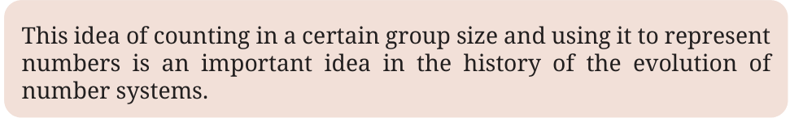
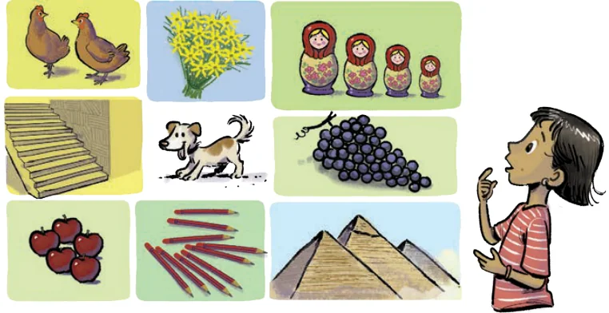
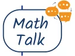

A group of indigenous people in Australia called the Gumulgal had the following words for their numbers.
Gumulgal (Australia)
- urapon
- ukasar
- ukasar-urapon
- ukasar-ukasar
- ukasar-ukasar-urapon
- ukasar-ukasar-ukasar Can you see how their number names are formed? The number name for 3 is composed of number names of 2 and 1. The number name for 4 is composed of two occurrences of the number name for 2.
Can you see how the names of the other numbers are formed? The numbers are counted in 2s, using which the number names are
formed: \(3 = 2 + 1\), \(4 = 2 + 2\), \(5 = 2 + 2 + 1\), \(6 = 2 + 2 + 2\).
Gumulgal called any number greater than 6 ras. There is a very interesting and puzzling historical phenomenon associated with this number system. Look at the following number systems of a group of indigenous people in South America, and the Bushmen of South Africa:
\(1 -\) tokale India
\(2 -\) ahage
\(3 -\) ahage tokale Bakairi (or ahawao) Bushmen \(1 -\) urapon \(5 -\) ahage ahage ahage4 - ahage ahage tokale \(1 - xa2 -\) t'oa Gumulgal \(2 -\) ukasar3 - ukasar-urapon4 - ukasar-ukasar Map not to scale \(3 -\) 'quo \(5 -\) ukasar-ukasar-urapon
\(4 -\) t'oa-t'oa \(6 -\) ukasar-ukasar-ukasar \(5 -\) t'oa-t'oa-t'a \(6 -\) t'oa-t'oa-t'oa

Despite being so far apart geographically, and with no trace of contact between them, these three groups have developed equivalent number systems! Historians have wondered how this happened. One theory is that these three groups of people may have had common ancestors, who used this number system. In course of time, their descendants migrated to these places. Even though the number system of Gumulgal had number names for numbers only till 6, we can see the emergence of an idea here. Counting in 2s is more efficient for representing numbers than, for example, a tally system. A general form which this idea has taken in different number systems is as follows: count in groups of a certain number (like 2 in the case of Gumulgal’s system), and use the word or symbol associated with this group size to represent bigger numbers. Some of the commonly used group sizes in different number systems have been 2, 5, 10 and 20. You can find the idea of counting by 5s in the Roman system (Table 1).

One of the phenomena that could have led people to this idea might be the human limit for immediately knowing the size of a collection at a glance. Let us try out the following activity.
Quickly count the number of objects in each of the following boxes:

Up to what group size could you immediately see the number of objects without counting? Most humans find it difficult to count groups having 5 or more objects in a single glance. This limit of perception could have prompted people using tally marks to replace every group of, say, 5 marks, with a new symbol, as seen in the system shown in Table 1.

only in groups of a single particular size? How would you represent a number like 1345 in a system that counts only by 5s? Even though counting in groups of a particular size and using it for number representation is more efficient than the tally system, this method can still become cumbersome for larger numbers. The next system shows a refinement of this idea.